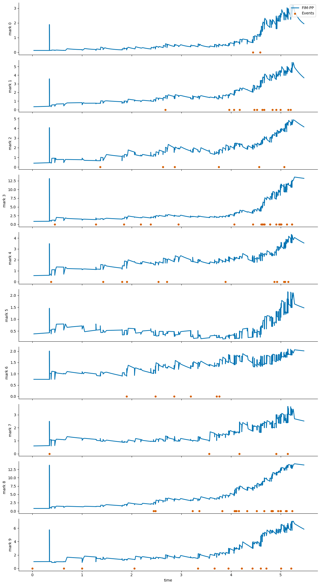

Tutorial on How to Use FIM-PP#
This notebook shows the recommended Hugging Face workflow for the point-process model from [BSC+26]: load the pretrained model with AutoModel.from_pretrained(...), download a small example dataset from the Hub, prepare the context/inference tensors, visualize the inferred intensities, and finish with a fine-tuning command template.
%matplotlib inline
from pathlib import Path
import warnings
import torch
from huggingface_hub import snapshot_download
from transformers import AutoModel
from point_process_tutorial_helper import load_hawkes_tensors, move_to_device, plot_intensity_comparison, prepare_hawkes_batch
warnings.filterwarnings("ignore")
if torch.cuda.is_available():
device = torch.device("cuda")
else:
if torch.backends.mps.is_available():
print("MPS is not yet supported for this FIM-PP tutorial path; using CPU instead.")
device = torch.device("cpu")
device
MPS is not yet supported for this FIM-PP tutorial path; using CPU instead.
device(type='cpu')
Load the Pretrained Model#
The standardized user-facing path is now the Transformers AutoModel interface.
model_root = Path(snapshot_download(repo_id="FIM4Science/FIM-PP", repo_type="model"))
model = AutoModel.from_pretrained(model_root, trust_remote_code=True)
model = model.to(device)
model.eval()
model_root
PosixPath('/Users/dberghaus/.cache/huggingface/hub/models--FIM4Science--FIM-PP/snapshots/9b43be14fc922bb389c873bf242fa9dd642662a5')
Download Example Data#
The tutorial dataset is stored as raw tensors on Hugging Face. We download the snapshot and load the .pt files directly.
dataset_root = Path(snapshot_download(repo_id="FIM4Science/10D-Hawkes", repo_type="dataset"))
dataset_root
PosixPath('/Users/dberghaus/.cache/huggingface/hub/datasets--FIM4Science--10D-Hawkes/snapshots/63a12564d24e7ab41e0381b62528781a95036884')
tensors = load_hawkes_tensors(dataset_root)
sorted(tensors)
['event_times', 'event_types']
Build a Context / Inference Batch#
We hold out a single path for inference and use the remaining paths as context. The helper also builds a dense evaluation grid for plotting the intensity curves between events.
batch = prepare_hawkes_batch(tensors, sample_idx=0, inference_path_idx=0, num_points_between_events=10)
batch = move_to_device(batch, device)
for key, value in batch.items():
if torch.is_tensor(value):
print(f"{key}: {tuple(value.shape)}")
else:
print(f"{key}: {value}")
context_event_times: (1, 1999, 100, 1)
context_event_types: (1, 1999, 100, 1)
context_seq_lengths: (1, 1999)
inference_event_times: (1, 1, 100, 1)
inference_event_types: (1, 1, 100, 1)
inference_seq_lengths: (1, 1)
intensity_evaluation_times: (1, 1, 1100)
num_marks: 10
Run Zero-Shot Inference#
with torch.no_grad():
output = model(batch)
sorted(output.keys())
['intensity_function', 'losses', 'predicted_intensity_values']
fig = plot_intensity_comparison(output, batch, path_idx=0)
fig

Fine-Tuning Starting from FIM-PP#
A short fine-tuning run can be started with the existing Hawkes entrypoint. The point-process checkpoint is the initialization source, while the dataset can be either a local tensor folder or an EasyTPP dataset id.
For this tutorial, the 10D-Hawkes snapshot is used for inference and visualization. The fine-tuning CLI was smoke-tested with easytpp/retweet, which matches the expected training layout directly.
Use the downloaded model directory from the earlier snapshot_download(...) call as --resume_model. The script accepts either that directory or a specific file inside it such as model-checkpoint.pth.
python scripts/hawkes/fim_finetune.py \
--config configs/train/hawkes/david.yaml \
--dataset easytpp/retweet \
--resume_model /absolute/path/to/downloaded/FIM-PP \
--save_dir results/finetuned_cdiff \
--epochs 200 \
--val-every 10
If you use the notebook variable directly, --resume_model should point to model_root.
The fine-tuned model is written under save_dir/<dataset_name>/<timestamp>/. With the command above, a run on easytpp/retweet will be stored in a directory like results/finetuned_cdiff/retweet/260401-1430/, and the exported checkpoint will appear in best-model/ inside that folder.
If --save_dir is omitted, the script defaults to results/finetuned_cdiff/<dataset_name>/<timestamp>/.
For local debugging, the lower-level fallback fim.models.hawkes.FIMHawkes.load_model(...) is still available, but the primary public workflow should use AutoModel.from_pretrained(...).